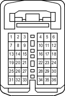

Код детали
C35-B
Каталожный номер
82824-26140
Цвет
Белый
Технические характеристики
Жгуты проводов для ремонта

Система
A-TRC (для моделей с 1GR-FE, 1KD-FTV)
АБС (для моделей с 1GR-FE, 1KD-FTV)
Система кондиционирования
Система зарядки (для моделей с 1GR-FE)
Щиток приборов (для моделей с левосторонним рулевым управлением)
Система Crawl (для моделей с 1GR-FE, 1KD-FTV)
Система круиз-контроля (для моделей с 1GR-FE)
Система помощи при спуске по склону (для моделей с 1GR-FE, 1KD-FTV)
Динамическая радарная система круиз-контроля (для моделей с 1GR-FE)
Индикатор ECT и A/T (для моделей с 1GR-FE)
Система управления двигателем (для моделей с 1GR-FE)
Иммобилайзер двигателя (для моделей с системой посадки и запуска)
Система посадки и запуска
Система помощи при подъеме по склону (для моделей с 1GR-FE, 1KD-FTV)
Система зажигания (для моделей с 1GR-FE)
Переключатель выбора "Multi-Terrain" (для моделей с 1GR-FE, 1KD-FTV)
Система запуска (для моделей с системой посадки и запуска)
Система блокировки рулевого управления (для моделей с системой посадки и запуска)
VSC (для моделей с 1GR-FE, 1KD-FTV)
Система дистанционной блокировки дверей (для моделей с системой посадки и запуска)